BI Group · Амбассадоры Добрососедства
Круги по интересам с другими жителями BI
BI Service поддержит вас: организационно, информационно и методически.
Своё сообщество
Мы можем жить в своём районе годами — и не знать большую часть соседей. А представьте: у вас и у ваших детей появляются друзья во дворе, а у вас — единомышленники не только на работе или среди родных. Свой круг, своя компания, люди, с которыми интересно. Если эта идея откликается — становитесь Амбассадором Добрососедства BI Group.
Свой круг рядом с домом
Единомышленники по интересу — не только коллеги и родня.
Друзья — и вам, и детям
Двор, где у детей есть с кем играть, а у вас — свои люди.
Вы не в одиночку
BI Service рядом: организационно, информационно и методически.
Оборудование и пространство в Yourt и во дворах: проектор, колонки, спортивный инвентарь.
SMM, анонсы в BIG App и домовых чатах — чтобы о вашем сообществе узнали.
Обучение Амбассадоров и личные консультации — по запуску и развитию своего сообщества и личного бренда.
Пространство, где сообщества рождаются и живут, — с личным доступом для вас.
Фирменные вещи, которые приятно носить, — и сразу видно, что вы в команде.
Приглашения на встречи компании — новые знакомства, идеи и возможности.
Имя Амбассадора Добрососедства, которое знают и во дворе, и в компании.
От идеи до сообщества — три простых шага
Опишите свою идею в двух словах.
Координатор сам свяжется с вами в течение 2 рабочих дней по WhatsApp и уточнит детали.
Координатор поможет с оборудованием, помещением, анонсами — и всей организацией на месте.
Откроется WhatsApp с готовым сообщением — останется нажать «Отправить». Координатор ответит в течение 2 рабочих дней. Личные данные мы не собираем.
Амбассадоры, которые собрали своё сообщество

Пришла на скандинавскую ходьбу — теперь ведёт спикинг-клуб казахского языка в Yourt Flora.

Шолпан Сейилхановна

Ходил на шахматные турниры — теперь сам проводит теннис для соседей и привёл других.

Алмас

Начала с встреч Долгожителей — и собрала хор соседей в Yourt Arena.

Кенжетай апа

Ремесленница из Yourt Arena Garden — ведёт классы рисования и лепки для детей двух дворов.

Гульмира
Узнайте, что проходит в вашем бигвилле и рядом — спорт, клубы, встречи, — и присоединяйтесь в пару кликов.
Открыть Календарь активностей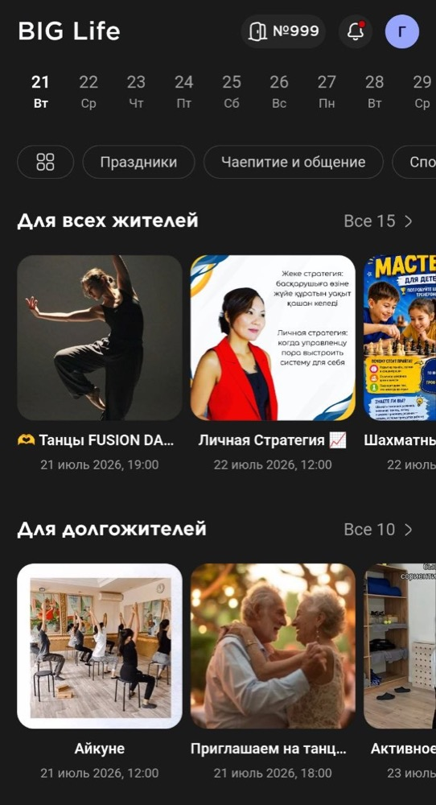
Спорт, культура, образование, дети — для всех поколений
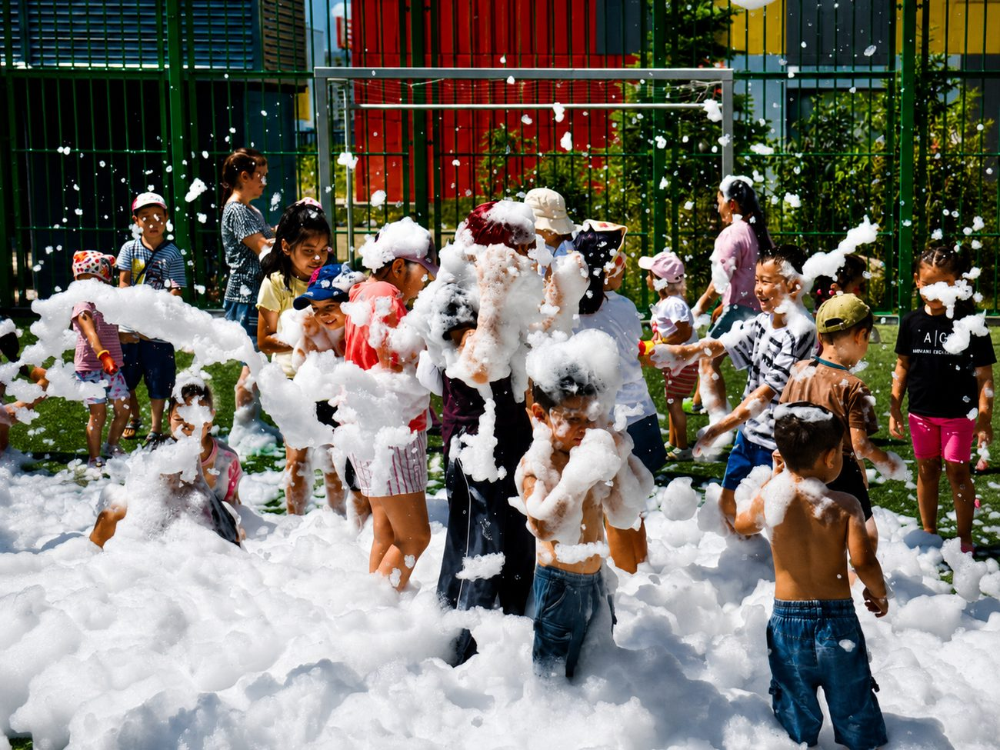
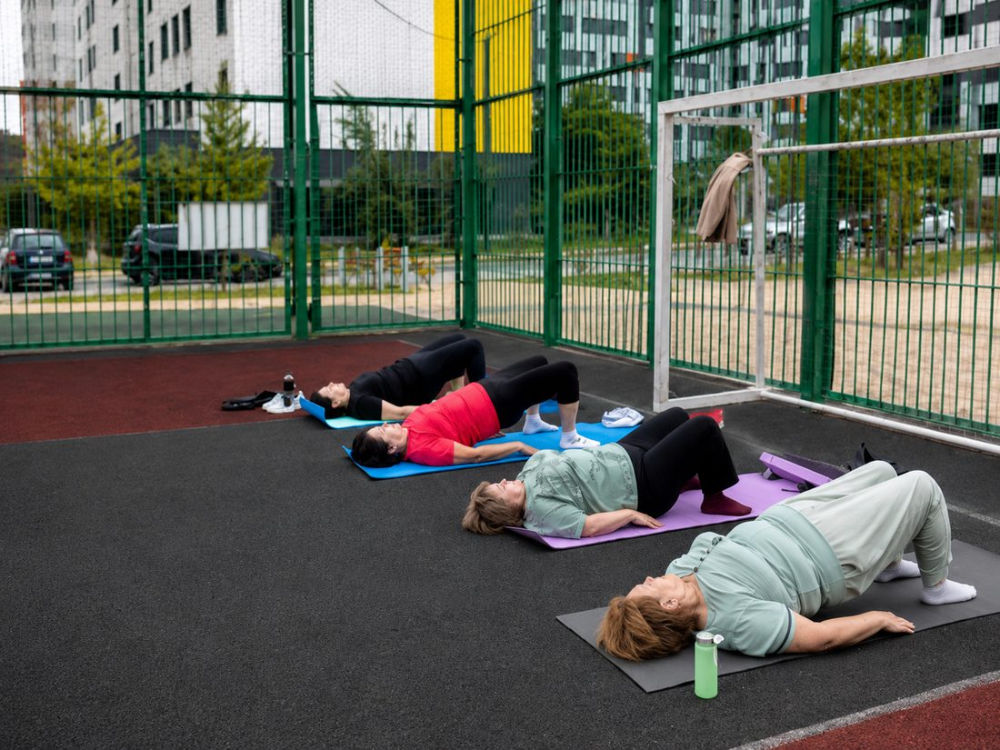
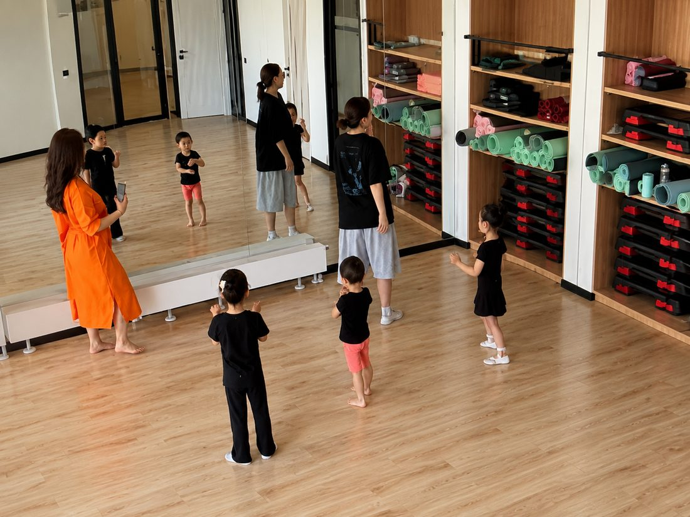
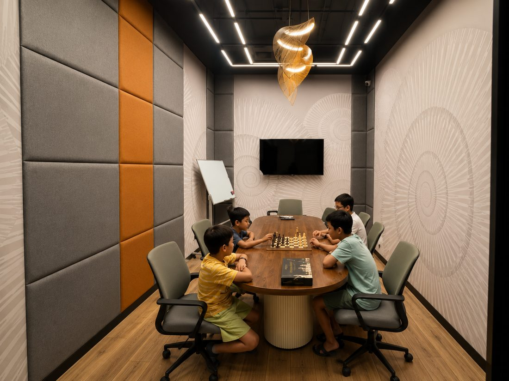
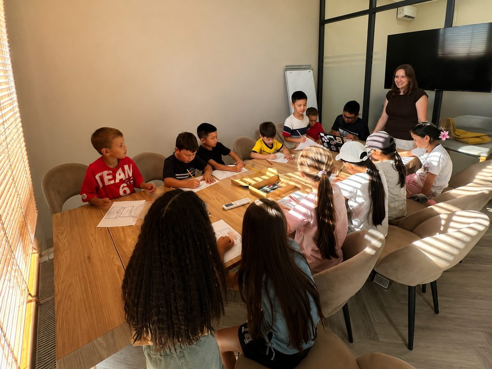
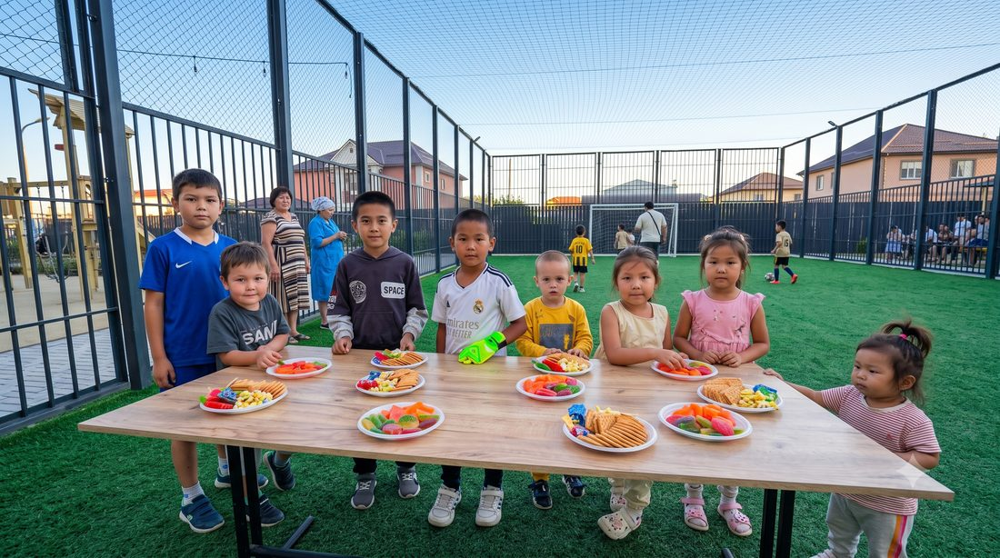
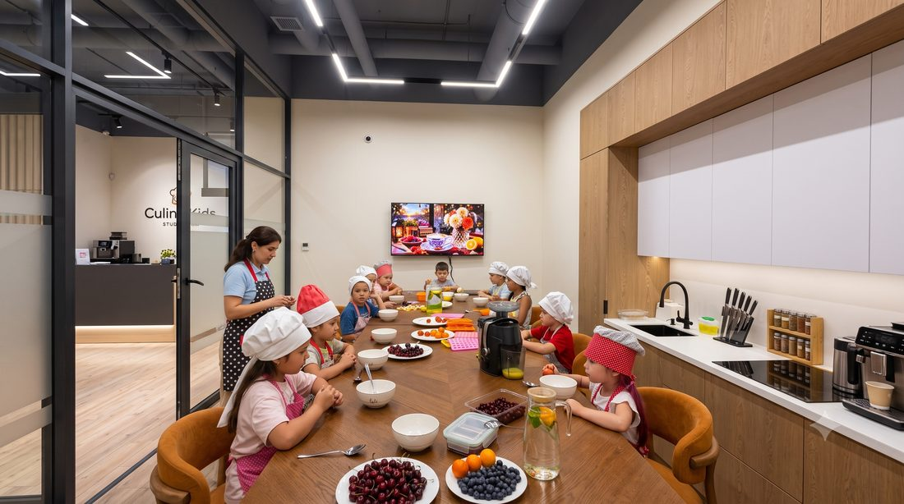
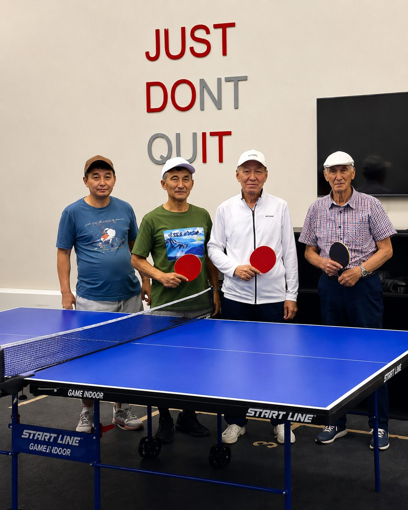
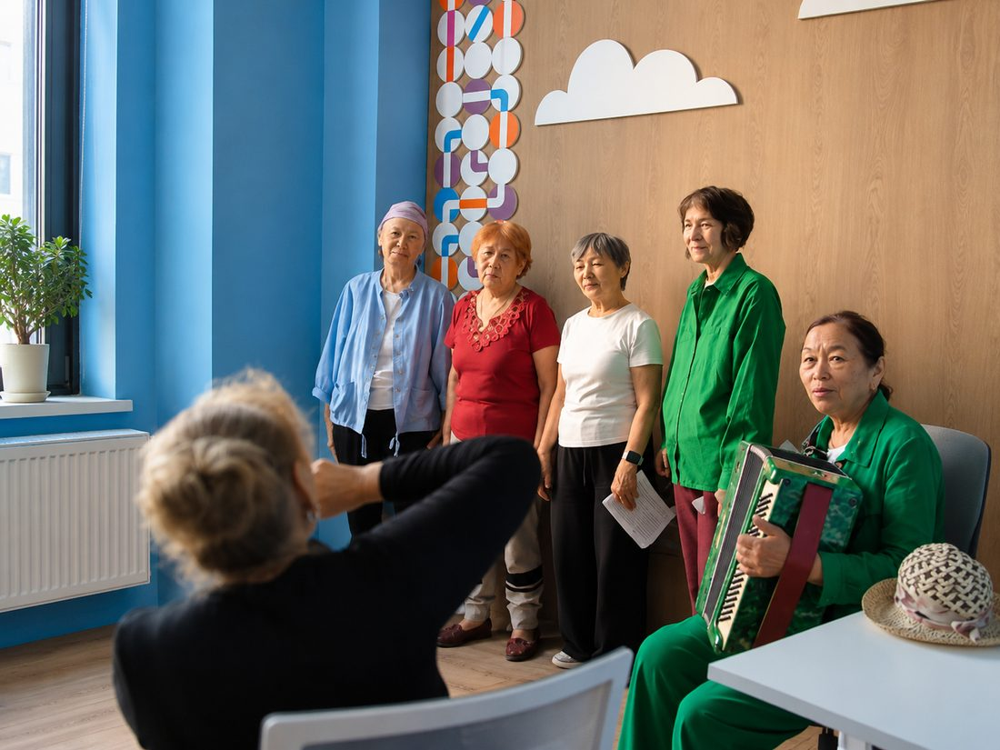
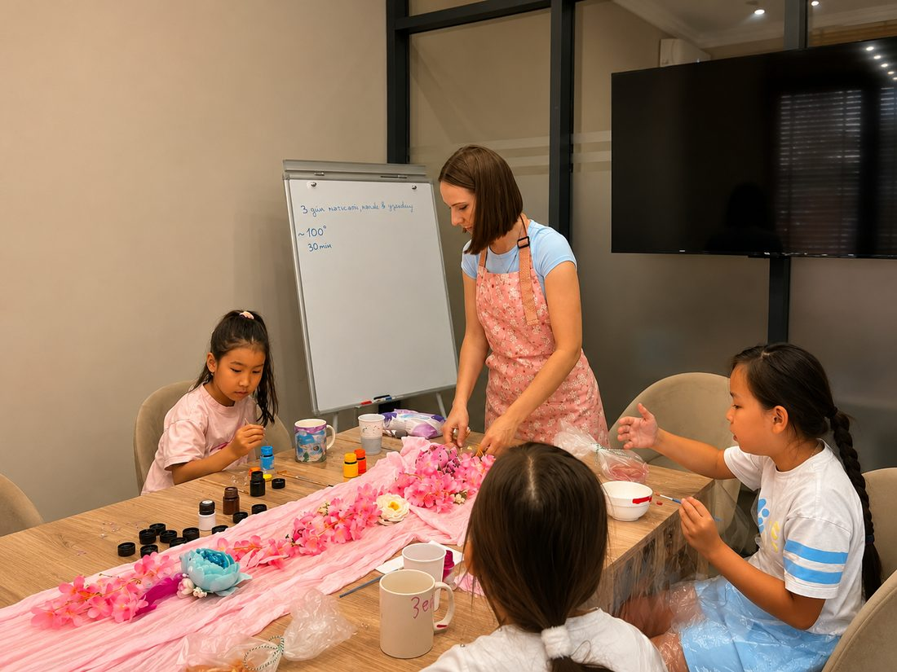
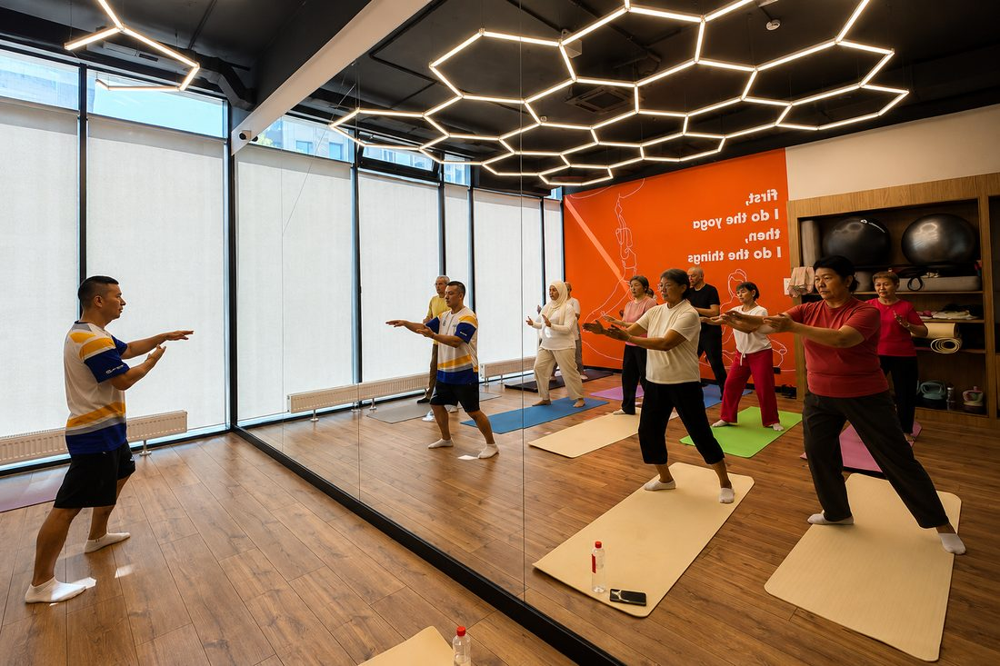
Можно прожить в доме годами — и не знать соседей. А ведь от людей рядом напрямую зависит, насколько мы здоровы и спокойны.
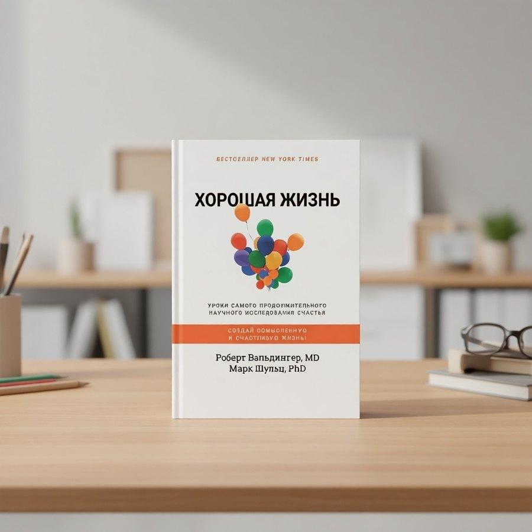
Гарвард 85 лет наблюдал за тысячами людей: что же делает жизнь хорошей? Оказалось — не деньги и не карьера, а тёплые отношения. У кого они есть — те здоровее и живут дольше.
Гарвардское исследование развития взрослых · книга «Хорошая жизнь»
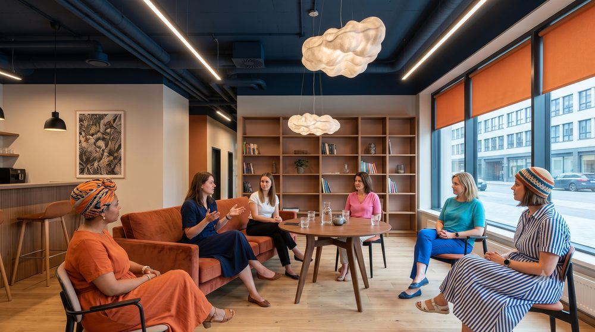
На Окинаве долгожителей больше, чем где-либо. И у каждого есть моаи — свой круг на 5–6 человек. Это единомышленники, которые рядом с вами и поддерживают вас в разные периоды жизни.
«Голубые зоны», Дэн Бюттнер · National Geographic
Сотни друзей не нужны — достаточно найти рядом своих пятерых. С них и начинается сообщество.
Нет. Вся поддержка — оборудование, помещение, анонсы — бесплатна. Вам не нужно ничего оплачивать.
Нет. Координатор поможет на каждом шаге — от идеи до проведения.
Важно не количество. Можно начать даже с одного-двух соседей — остальные подтянутся.
Любые встречи по интересам — за исключением: ночных мероприятий; активностей с алкоголем и табаком; религиозных мероприятий; встреч на эзотерические темы; встреч МЛМ-сообществ; лицензируемой деятельности; привлечения инвестиций в финансовые инструменты; встреч организаций, признанных финансовыми пирамидами.
Идея и желание. Остальное — оборудование, помещение, анонсы — даём мы.
Если вы не живёте в BI Group, но хотите развивать идею добрососедства — пишите нам — придумаем, как быть полезными друг другу!
Придут. Даже если сначала двое — это уже не одиночество. А позвать поможем мы.
И не надо. Достаточно быть тем, кому не всё равно. А как собрать людей и провести встречу — подскажем и пройдём это вместе.
Вы и не в одиночку. Организацию берём на себя, а рядом всегда координатор — подскажет и подстрахует.
Самые живые дворы держатся на тех, у кого есть время, опыт и душа. На вас.
Один ваш шаг — и рядом появятся те, кто давно этого ждал. А мы будем рядом на каждом.
Сделать первый шагСообщество начинается с +1